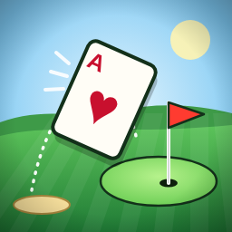
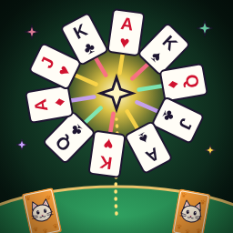
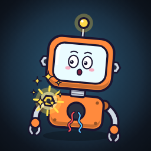
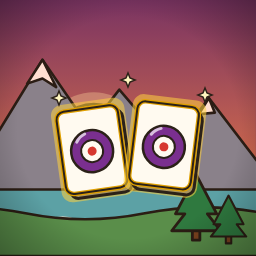
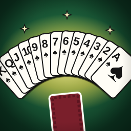
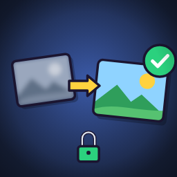
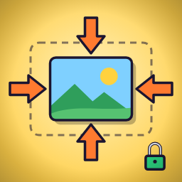

Hry a nástroje
Priamo v prehliadači, bez inštalácie a registrácie.
Rýchle a výbušné
Krátke kolá, otrasy, combo a postavičky, ktoré reagujú na každý ťah.
Na chvíľku s kávou
Uspokojivé cvaknutie, kolo na pár minút a niečo, čo sa postupne skladá.
-

HraGolf solitaire
9 kreslených jamiek: každá odložená karta posunie loptičku k jamke. Scorecard pod/nad par, birdie, eagle aj hole in one. Každé rozdanie sa dá vyhrať.
▶ -

HraKlondike solitaire
Pasians s dennou výzvou (rovnaké rozdanie pre všetkých), odomykateľnými balíčkami kariet (mačky, staré mapy, vesmír) a ohňostrojom z kariet pri výhre.
▶ -

HraSkrutky a matice
Oprav rozbitého robota: trieď farebné matice na skrutky a za každú úroveň mu vráť jeden diel. 100 úrovní.
▶
Pokojné a čitateľné
Veľké karty a kamene, bez časovača, späť aj nápoveda vždy po ruke.
-

HraMahjong: Páry
Cesta okolo sveta: odoberajte páry kameňov a zbierajte kreslené pohľadnice zo 16 miest. Bez časovača, veľké kamene.
▶ -

HraPavúk solitaire
Pavúčí solitaire s obrími, konečne čitateľnými kartami. Tréning mozgu: séria dní, čas a zlepšenie. Bez časovača, 1, 2 alebo 4 farby.
▶
Rýchle nástroje na súbory
Výsledok za pár sekúnd. Súbory neopúšťajú vaše zariadenie.
-

NástrojHEIC na JPG
Prevod fotiek z iPhonu (HEIC) na JPG alebo PNG – dávkovo, bez nahrávania na server
▶ -

NástrojObrázok na presné kB
Zmenší fotku pod zadanú veľkosť v kB (napr. 100 kB pre formulár) – aj presne na bajt
▶ -
Nástroj
Spojiť a zmenšiť PDF
Spojenie viacerých PDF (aj fotiek) do jedného a zmenšenie veľkosti – bez nahrávania na server
▶ -
Nástroj
WebP na PNG / JPG
Prevod obrázkov WebP (aj AVIF) na PNG alebo JPG – dávkovo, bez nahrávania na server
▶